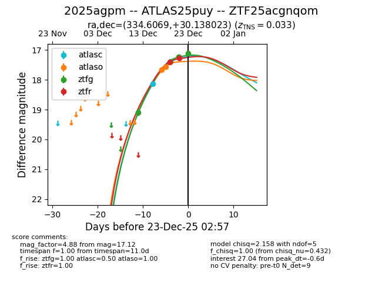
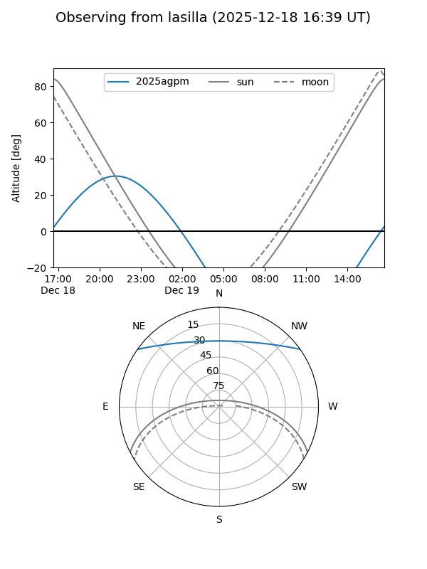
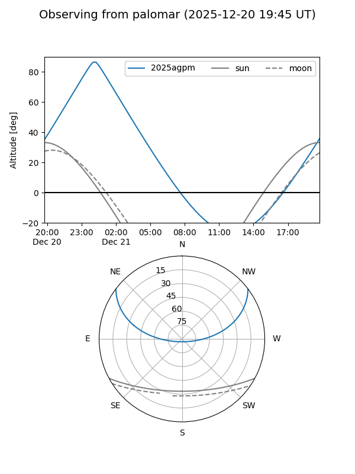
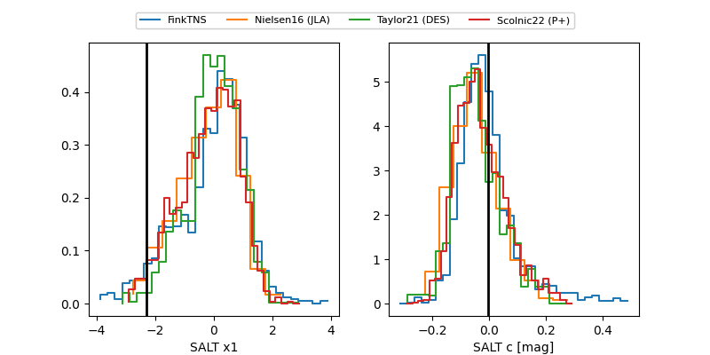

2025agpm
Target 2025agpm at 2025-12-23 03:00
Aliases and brokers:
FINK: fink-portal.org/ZTF25acgnqom
Lasair: lasair-ztf.lsst.ac.uk/objects/ZTF25acgnqom
ALeRCE: alerce.online/object/ZTF25acgnqom
TNS: wis-tns.org/object/2025agpm
YSE: ziggy.ucolick.org/yse/transient_detail/2025agpm
alt names
ZTF25acgnqom (ztf,fink_ztf)
2025agpm (tns,yse)
ATLAS25puy (atlas)
Coordinates:
equatorial (ra, dec) = 334.6069,+30.13802
equatorial (HMS+DMS) = 22:18:25.65,+30:08:16.88
galactic (l, b) = (87.6427,-22.05380)
Flags:
confirmed ia
Photometry:
last atlasc=18.14, atlaso=17.57, ztfg=17.12, ztfr=17.28
1 atlasc, 2 atlaso, 4 ztfg, 2 ztfr detections
Lightcurve

Visibility


Additional plots
